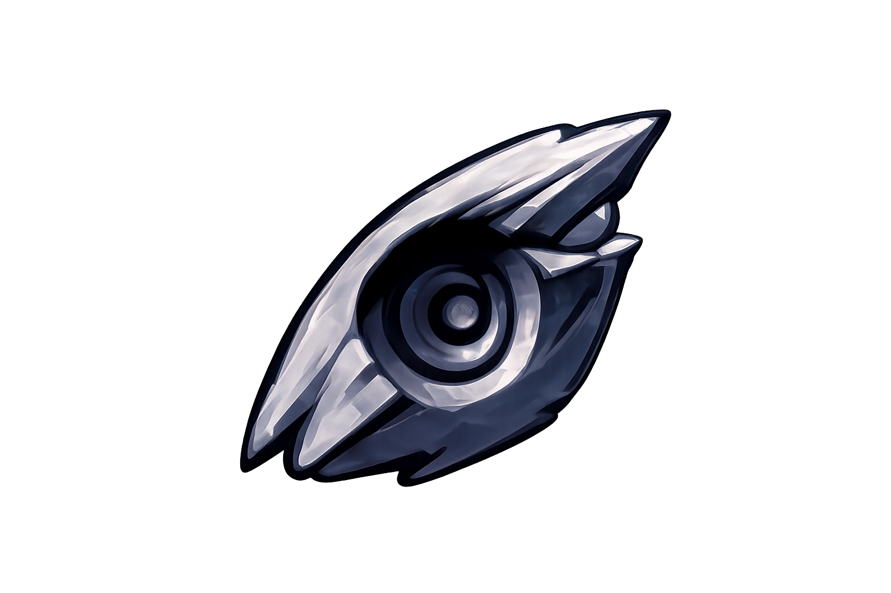
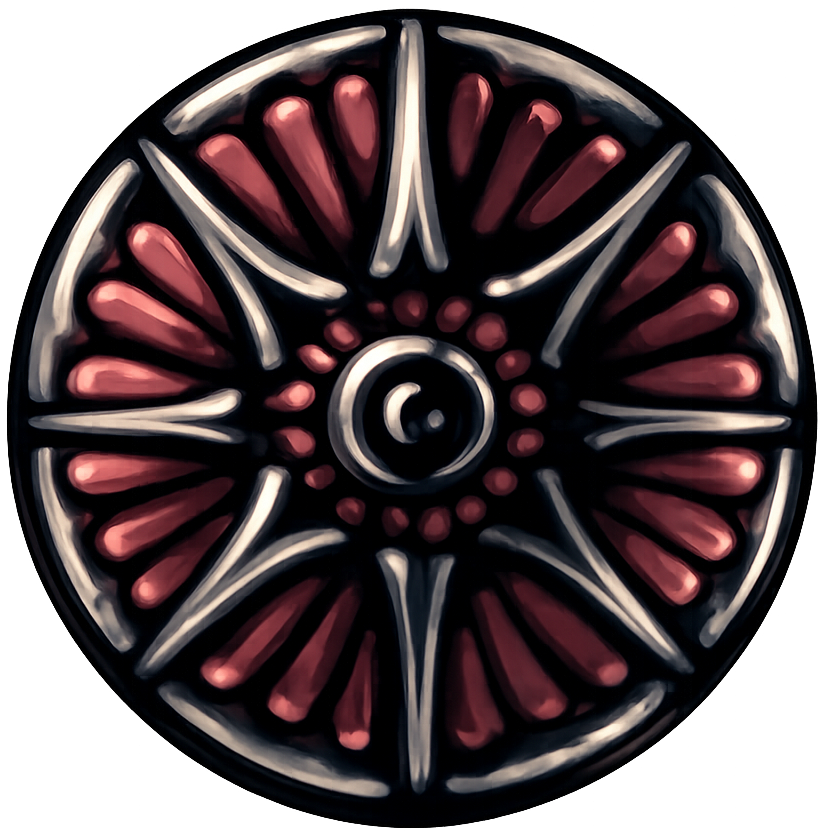

Muescas de Amuletos
Las muescas son el sistema que limita cuántos amuletos puedes equipar simultáneamente. A medida que exploras Hallownest, podrás obtener muescas adicionales que te permitirán combinar diferentes potenciadores y personalizar el estilo de combate del Caballero, desde fortalecer tu aguijón hasta mejorar tus capacidades mágicas con un maximo de 11 muescas que puedes conseguir en total por todo Hallownest.

Amuletos de Hollow Knight
Los amuletos son objetos especiales que otorgan al Caballero habilidades únicas y mejoras pasivas. Encontrar y combinar correctamente estos accesorios es esencial para adaptar tu estilo de juego, ya sea que prefieras enfocarte en el combate cuerpo a cuerpo, maximizar tu recolección de alma o mejorar tu resistencia durante los desafíos más difíciles de Hallownest.
Coonsejo: A medida de que avances en el juego es escencial tener una buena combinación de amuletos para cada cosa, ya sea para explorar, una pelea o hacer parkour.
Todos los amuletos de Hollow Knight